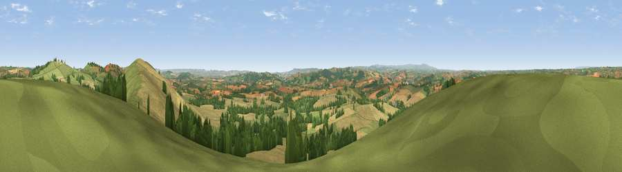

Viewpoint near Stockleigh Pomeroy
#2757 in England · top 2% of its area beats it · near Stockleigh PomeroyWhere it is
The exact computed spot (SS 88562 03125). Click the marker for map links.
The view, rendered

A 360° render of this exact spot computed from the terrain model, tree cover and land cover — summer colours, afternoon light, calibrated against photographs of famous viewpoints. Real trees, hedges and buildings will differ in detail.
The panorama
Grey silhouette: terrain skyline in each direction (720 bearings, Earth curvature and refraction included). Dashed green: skyline with trees (+15 m) and buildings (+8 m) as obstacles. Blue strip: how far the ground is visible on each bearing.
Where the view opens
Wedge length = distance to the farthest visible ground on that bearing (vegetation-aware). Rings at 10, 25 and 50 km.
What fills the view
50% grassland · 34% cropland · 15% woodland ·
Angular shares of the visible panorama (visual magnitude), not map area. Landscape diversity 0.45 (0–1 Shannon).
Key numbers
More beautiful places nearby
The staircase of upgrades: each row has a higher view potential than everything closer. Driving times are estimates from straight-line distance, calibrated against real road routing — check an actual route before setting out.
| Place | Direction | Drive | Score |
|---|---|---|---|
| Viewpoint near Stockleigh Pomeroy | E · 1 km | ~3 min | 78.9 |
| Viewpoint near Whitestone | SSW · 9 km | ~17 min | 79.8 |
| Viewpoint near Kenn | S · 19 km | ~33 min | 80.0 |
| Viewpoint near Kenton | SSE · 22 km | ~37 min | 80.7 |
| Viewpoint near Kenton | S · 23 km | ~38 min | 82.9 |
| High Peak | SE · 28 km | ~44 min | 85.3 |
| Viewpoint near Luxborough | NNE · 39 km | ~58 min | 85.5 |
| Wills Neck | NE · 42 km | ~62 min | 85.7 |
50.81692, -3.58326 · source: screening · position refined by local search. Computed location — check access rights before visiting.